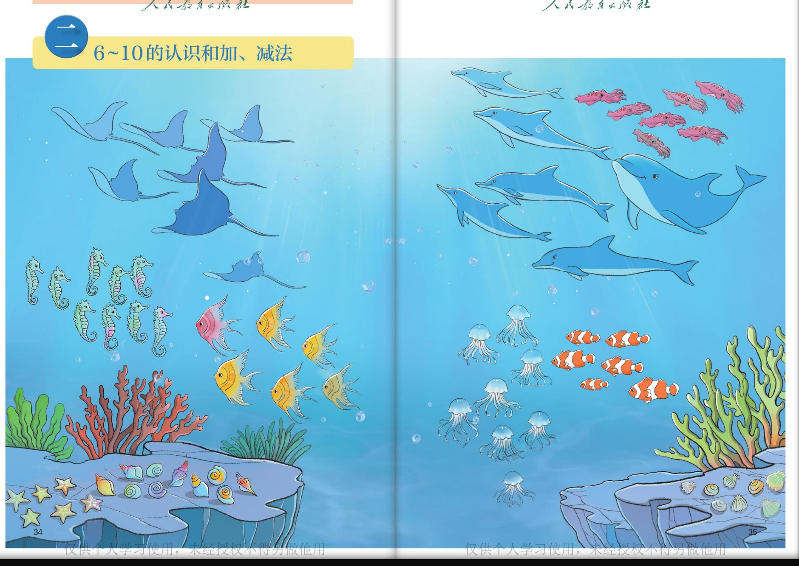
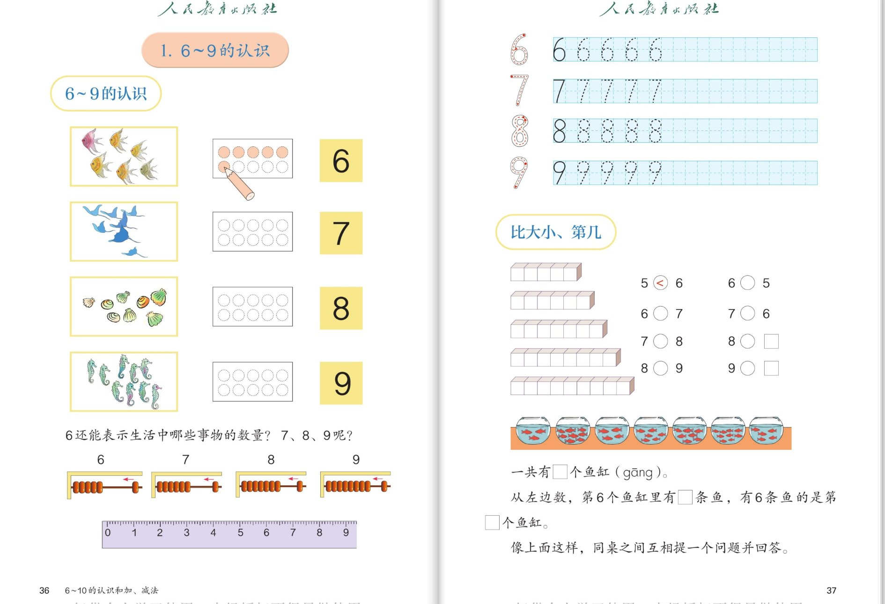
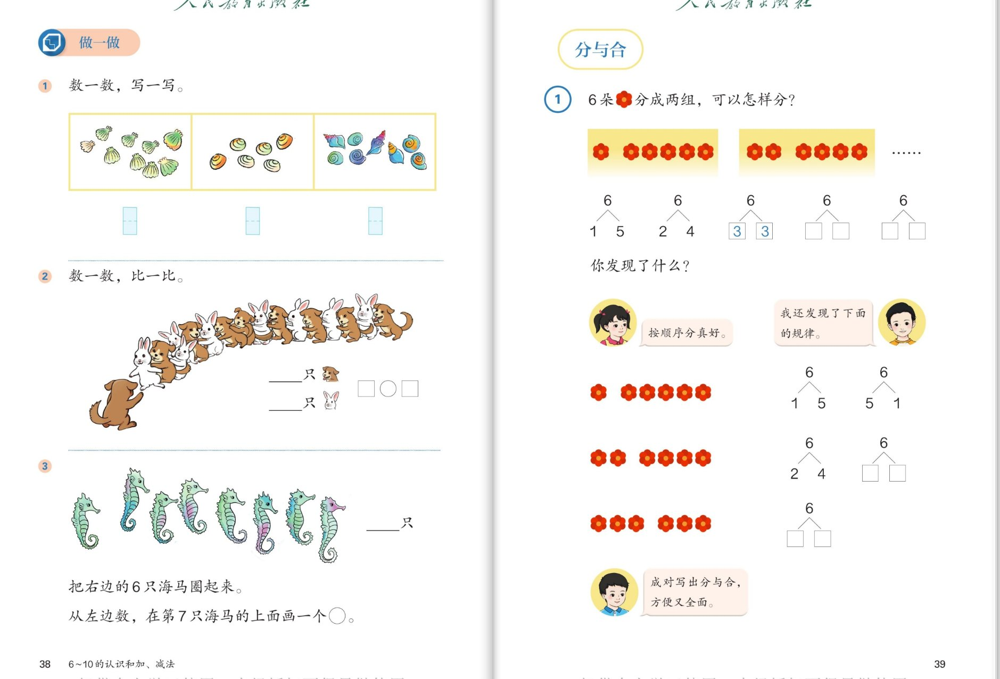
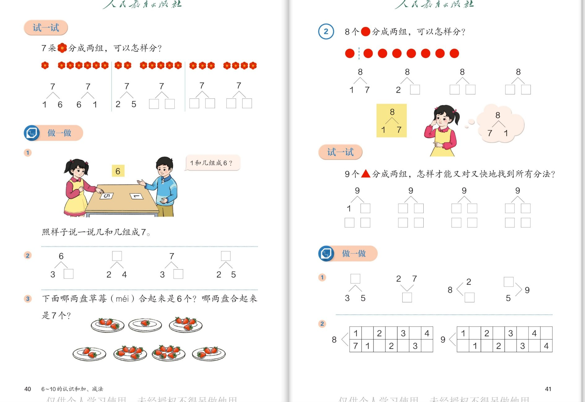
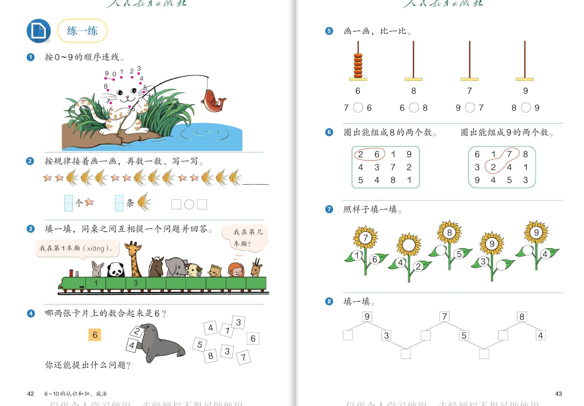

🧠 认知层 · 认识6~9、数得对
💪 强化层 · 会比大小、分与合
🚀 拓展层 · 找规律、敢挑战
👨👩👧 使用建议：每组内容配 6 个问题，按"认知 → 强化 → 拓展"三层递进。
6～9 的数数比以前更长，重点是按顺序数、不重复不遗漏；分与合从 6 到 9，重点是按顺序分、成对记忆。
点击问题卡片展开参考答案；图中数量请以孩子实际点数为准，数的方法比结果更重要。
1
🌊 单元主题图 · 海底世界（第34～35页）
单元起点 · 数 6~10

📖 课本第 34～35 页 · 单元主题图
🧠 认知层数一数海底的朋友
🐬
认知 1：海底真热闹！找一找，图上有哪些海洋动物？选一种你最喜欢的，数一数有几条（只）。
看答案
参考答案：
图上有
蝠鲼（像风筝一样的鱼）、海马、神仙鱼、海豚、鱿鱼、水母、小丑鱼，还有海星、贝壳等。
- 例如数海豚：用手指点着，按从上到下（或从左到右）的顺序数，一共 7 条。
- 数量在 6～10 之间的动物，就是这个单元要认识的新数。
🌈 以实际点数为准，说出"我是按顺序数的"最重要。
🐙
认知 2：数一数：粉红色的鱿鱼有几只？透明的水母有几只？把数量和数字连起来想一想。
看答案
参考答案：
- 鱿鱼 6 只，用数字"6"表示；
- 水母 8 只，用数字"8"表示。
🌈 数的时候可以数一只做一个记号，做到不重复、不遗漏。
💪 强化层数完会比多少、会找相同
⚖️
强化 1：比一比：水母和鱿鱼谁多谁少？多几只（少几只）？
看答案
参考答案：
- 水母 8 只，鱿鱼 6 只：8 > 6，水母多；
- 水母比鱿鱼多 2 只，鱿鱼比水母少 2 只。
🌈 用一一对应比：一只水母对一只鱿鱼，水母多出 2 只。
🧡
强化 2：数一数小丑鱼有几条，神仙鱼有几条——这两种鱼的数量有什么关系？
看答案
参考答案：
小丑鱼
7 条，神仙鱼
7 条——数量
同样多！
- 7 = 7，虽然长得不一样，数量相同就能用同一个数表示。
🌈 以实际点数为准；发现"数量相同"是关键。
🚀 拓展层大胆说、自己问
🐟
拓展 1：把图里的动物按数量排排队：哪种最多？哪种最少？你能找出数量在 6～10 之间的所有动物吗？
看答案
参考答案（以实际点数为准）：
- 如：鱿鱼 6 只 < 海豚 7 条 = 小丑鱼 7 条 < 水母 8 只；
- 它们都在 6～10 之间——这正是本单元要学的"新数"！
🌈 能排出顺序、说清理由就很好。
🙋
拓展 2（小小挑战）：看着海底世界图，你也来提一个数学问题考考爸爸妈妈！
看答案
参考示例（提法不唯一）：
- "海底一共有几种动物？"（数种类）
- "海马比水母多还是少？"
- "从左边数，海星排第几？"
🌟 自己会提问，就是数学学习最大的进步！
2
🔢 6～9 的认识 · 比大小、第几（第36～37页）
数对应 · 写数 · 序数

📖 课本第 36～37 页 · 6～9 的认识 / 比大小、第几
🧠 认知层数与物对应、认识数序
🐠
认知 1：照样子涂一涂：6 条鱼对应 6 个圆，涂满 6 个。照样子说说 7 只鸟、8 个贝壳、9 只海马分别用哪个数表示？
看答案
参考答案：
- 7 只鸟 → 7；8 个贝壳 → 8；9 只海马 → 9。
- 规律：有几个，就用数字几表示；数量越多，数越大。
📏
认知 2：写一写：6、7、8、9 各像什么？再看尺子图：6 的前面是几？7 的后面是几？
看答案
参考答案：
- 6 像哨子（口哨），7 像镰刀，8 像葫芦／麻花，9 像气球拖着线；
- 尺子上：6 的前面是 5，7 的后面是 8；相邻两个数都相差 1。
💡 写 8 要注意：上下两个圆圈要一样大小才漂亮！
💪 强化层会比大小、会找第几
🧊
强化 1：摆方块比大小：5○6、6○7、7○8、8○9，○里填 > 还是 <？反过来 6○5、7○6 又该填什么？
看答案
参考答案：
- 5 < 6；6 < 7；7 < 8；8 < 9；
- 反过来看：6 > 5；7 > 6；还可以继续写 8○□ 填 8 > 7，9○□ 填 9 > 8。
💡 记住：开口对着大的数，尖角对着小的数。
🐟
强化 2：鱼缸图：一共有几个鱼缸？从左边数，第 6 个鱼缸里有几条鱼？有 6 条鱼的是第几个鱼缸？
看答案
参考答案：
- 一共有 7 个鱼缸；
- 从左边数，第 6 个鱼缸里有 4 条鱼；
- 有 6 条鱼的是从左边数的第 2 个鱼缸（按图上实际点数为准）。
💡 "第 6 个"是位置，"6 条"是数量——先分清，再回答。然后像书上说的，同桌互相提一个问题吧！
🚀 拓展层联系生活、发现关系
🏠
拓展 1：书上问："6 还能表示生活中哪些事物的数量？7、8、9 呢？"请你说一说。
看答案
参考示例（不唯一）：
- 6：骰子最多 6 点、蜜蜂 6 条腿、一星期 6 个上课日；
- 7：一星期 7 天、彩虹 7 种颜色；
- 8：螃蟹 8 条腿、八角星有 8 个角；
- 9：猫 9 条命（故事里的）、九宫格 9 个格子。
🌟 说得越贴近生活越好！
🤝
拓展 2（小小挑战）：和 6 相邻的两个数是几？比 8 多 1 的数是几？9 比 7 多几？
看答案
参考答案：
- 和 6 相邻的是 5 和 7（前面一个、后面一个）；
- 比 8 多 1 是 9；
- 9 比 7 多 2（从 7 往后数：8、9，走了 2 步）。
🌈 在尺子上找一找，"多几"就是走了几步，一眼就看出来了。
3
🌸 做一做 · 6 的分与合（第38～39页）
数数写数 · 第几 · 6的分与合

📖 课本第 38～39 页 · 做一做 / 分与合
🧠 认知层数一数、写一写、比一比
🥬
认知 1：做一做第①题：数一数，写一写——三幅图里的东西各有几个？
看答案
参考答案：
- 先数一数再写数：第一幅图 9 棵青菜，第二幅图 7 个包子，第三幅图 8 个玩具（以实际点数为准）。
- 数的时候按顺序：一行一行数，或一圈一圈数。
🐰
认知 2：小狗和小兔排队比多少：小狗有几只、小兔有几只？在○里填 > 或 <。
看答案
参考答案：
- 小狗 8 只，小兔 7 只（以实际点数为准）；
- 8 > 7，小狗比小兔多；也可以说 7 < 8，小兔比小狗少。
💪 强化层分清数量与位置，学会有序分
🐴
强化 1：海马图：一共有几只海马？把右边的 6 只圈起来，再从左边数，在第 7 只海马上面画○。这两个"6"和"7"意思一样吗？
看答案
参考答案：
- 一共 9 只海马（以实际点数为准）；
- 不一样！"圈出 6 只"是数量——圈起来的海马有 6 只；"第 7 只"是位置——从左数排在第 7 的那一只。
💡 做这类题先问自己：说的是"多少只"，还是"排在第几"？
🌺
强化 2：6 朵红花分成两组，可以怎样分？书上已经分出 1 和 5、2 和 4、3 和 3，请你接着写完，并把空填完整。
看答案
参考答案：
6 可以分成：
1 和 5、2 和 4、3 和 3、4 和 2、5 和 1，一共 5 种分法。
- 书上问"你发现了什么？"——发现：1 和 5 与 5 和 1 是一对，2 和 4 与 4 和 2 是一对，交换位置就得到新的分法！
🚀 拓展层有序思考、平均分
📋
拓展 1：书上小女孩说"按顺序分学好"。为什么按顺序分好？好在哪里？
看答案
参考答案：
按顺序分（一边从 1 开始每次多 1），
一种都不会漏、也不会重复。
- 6 的分法：1 和 5 → 2 和 4 → 3 和 3，接着"反过来"就是 4 和 2 → 5 和 1。
💡 "有序"是数学里特别好的习惯，分与合、找规律都要用它。
⚖️
拓展 2（小小挑战）：6 可以分成 3 和 3，两边同样多。那 7 也可以分成"两边同样多"吗？5 呢？找找哪些数可以。
看答案
参考答案：
- 7 不行：7 的分法是 1和6、2和5、3和4……没有两边一样的；
- 5 也不行；
- 可以发现：6、8、10 这些数可以分成同样多的两份（6=3+3，8=4+4），而 5、7、9 不行。
🌟 这是"双数能平分、单数不能平分"的第一颗种子！
4
🔺 7、8、9 的分与合（第40～41页）
试一试 · 组成 · 又对又快

📖 课本第 40～41 页 · 试一试 / 做一做 / 分与合
🧠 认知层分一分 7 和 8
🌺
认知 1：试一试：7 朵红花分成两组，可以怎样分？把书上的空填完整。
看答案
参考答案：
7 可以分成：
1 和 6、2 和 5、3 和 4、4 和 3、5 和 2、6 和 1，共 6 种分法。
- 按顺序分，一对一对记：1↔6、2↔5、3↔4 交换位置。
🔴
认知 2：8 个红点分成两组，可以怎样分？书上的小女孩为什么先想"8 可以分成 1 和 7"，马上又想到"8 可以分成 7 和 1"？
看答案
参考答案：
- 8 可以分成：1 和 7、2 和 6、3 和 5、4 和 4、5 和 3、6 和 2、7 和 1；
- 因为交换两边的数，总数不变——想到一个分法，马上就有一对"好朋友"分法，又对又快！
💪 强化层会说组成、会用组成解决问题
🎴
强化 1：做一做：两个小朋友玩卡片，"1 和几组成 6？"照样子说一说几和几组成 7。再填空：6 分成 3 和 □、□ 分成 2 和 4、7 分成 3 和 □、□ 分成 2 和 5。
看答案
参考答案：
- 1 和 5 组成 6；组成 7 的有：1 和 6、2 和 5、3 和 4……
- 6 分成 3 和 3；6 分成 2 和 4；7 分成 3 和 4；7 分成 2 和 5。
🍓
强化 2：做一做第③题：下面哪两盘草莓合起来是 6 个？哪两盘合起来是 7 个？
看答案
参考答案（方法）：
- 先数出每盘有几个，再想"几和几合成 6（7）"。
- 如：2 盘的加 4 盘的 = 6（2 和 4 组成 6）；3 盘的加 4 盘的 = 7（3 和 4 组成 7）（以图上实际数量为准）。
🌈 这就是分与合的用处：看到两个数，马上想它们能组成几。
🚀 拓展层又对又快的秘诀
🔺
拓展 1：试一试：9 个三角形分成两组，"怎样又能对又快地找到所有分法？"
看答案
参考答案：
按
顺序分：先一边放 1 个（1 和 8），再 2 个（2 和 7）、3 个（3 和 6）、4 个（4 和 5）……
- 全部是：1和8、2和7、3和6、4和5、5和4、6和3、7和2、8和1，共 8 种；
- 秘诀：按顺序 + 想到一对记一对，不用摆也能想全！
📊
拓展 2（小小挑战）：做一做第②题：把 8 和 9 的组成表填完整。横着看、竖着看，你发现了什么规律？
看答案
参考答案：
- 8 的组成表：1 和 7、2 和 6、3 和 5、4 和 4……（7 在下一行配 1、2、3）；9 的组成表：1 和 8、2 和 7、3 和 6、4 和 5……
- 规律：上面一行从 1 开始每次多 1，下面一行每次少 1，上下合起来都是 8（或 9）。
💡 这个表就是"分与合"的全家福，横着背竖着看都行——找到规律，记忆就不是难事！
5
🚂 练一练（第42～43页）
连线 · 规律 · 火车第几 · 组成游戏

📖 课本第 42～43 页 · 练一练
🧠 认知层按顺序、找规律画
🎣
认知 1：小猫钓鱼：按 0～9 的顺序连线，连出来的是什么？先想想 0 后面连几，9 前面连几。
看答案
参考答案：
按
0→1→2→3→4→5→6→7→8→9 的顺序连，就钓到了一条
大鱼！
- 连之前先把数字都看一遍，从 0 出发，一个一个往后找。
⭐
认知 2：第②题"按规律接着画一画"：星星和金鱼是按什么规律排的？接着该怎么画？再数一数各有多少、比一比。
看答案
参考答案：
- 规律：按图上的排列（如"1 颗星、几条金鱼"一组一组重复）接着画；
- 画完数一数：星星有 □ 个、金鱼有 □ 条（以实际点数为准），再比较谁多谁少，在○里填 > 或 <。
🌈 找规律的方法：把重复的部分圈出来，一眼就看清楚了。
💪 强化层第几、组成、比大小一起练
🚂
强化 1：小火车：熊猫坐在第几车厢？长颈鹿说"我在第 1 车厢"。像书上那样，同桌互相提一个问题并回答。
看答案
参考答案（以图为准）：
- 从车头方向数起，先弄清"从哪边开始数"；
- 示例问题："一共有几节车厢？""大象在第几车厢？""从右数，熊猫排第几？"
- 提问时说清"从左数 / 从右数"，回答才不会乱。
💡 说"第几"前先说方向——这是本题最重要的习惯！
🎴
强化 2：第④题：哪两张卡片上的数合起来是 6？你还提出什么问题？再练第⑤题：算珠图里 7○6、6○8、9○7、8○9 填 > 还是 <？
看答案
参考答案：
- 合起来是 6 的两张：2 和 4、5 和 1、3 和 3（按图上卡片实际点数为准）；
- 还可以提："哪两张合起来是 7？哪两张合起来是 10？"
- 第⑤题：7 > 6；6 < 8；9 > 7；8 < 9。
🚀 拓展层圈组成、看花心找规律
🔍
拓展 1：第⑥题：圈出能组成 8 的两个数，圈出能组成 9 的两个数。说说你是怎么找的，怎样找得快？
看答案
参考答案（方法）：
- 想口诀："凑 8"：1 和 7、2 和 6、3 和 5、4 和 4；"凑 9"：1 和 8、2 和 7、3 和 6、4 和 5；
- 找到一个就马上想它的"交换对"（如圈了 2 和 6，就再找 6 和 2）；
- 图上如：2 和 6、3 和 5 组成 8；1 和 8、2 和 7 组成 9（按图上数字为准）。
🌻
拓展 2（最难挑战）：第⑦题向日葵"照样子填一填"：花心里的数和两片叶子上的数是什么关系？把空全填出来。第⑧题的组成梯子也会填吗？
看答案
参考答案：
- 关系：两片叶子上的数合起来，正好是花心里的数（花心是"总数"）；
- 示例：7 → 1 和 6（已填）；8 → 4 和 4；9 → 3 和 6；9 → 5 和 4；
- 第⑧题按分与合填：9 分成 □ 和 3、7 分成 □ 和 5、8 分成 □ 和 4……想"几和几组成总数"逐层往上填。
🌟 向日葵就是"分与合"穿了新衣服——认出它的真面目，题目就变简单了！